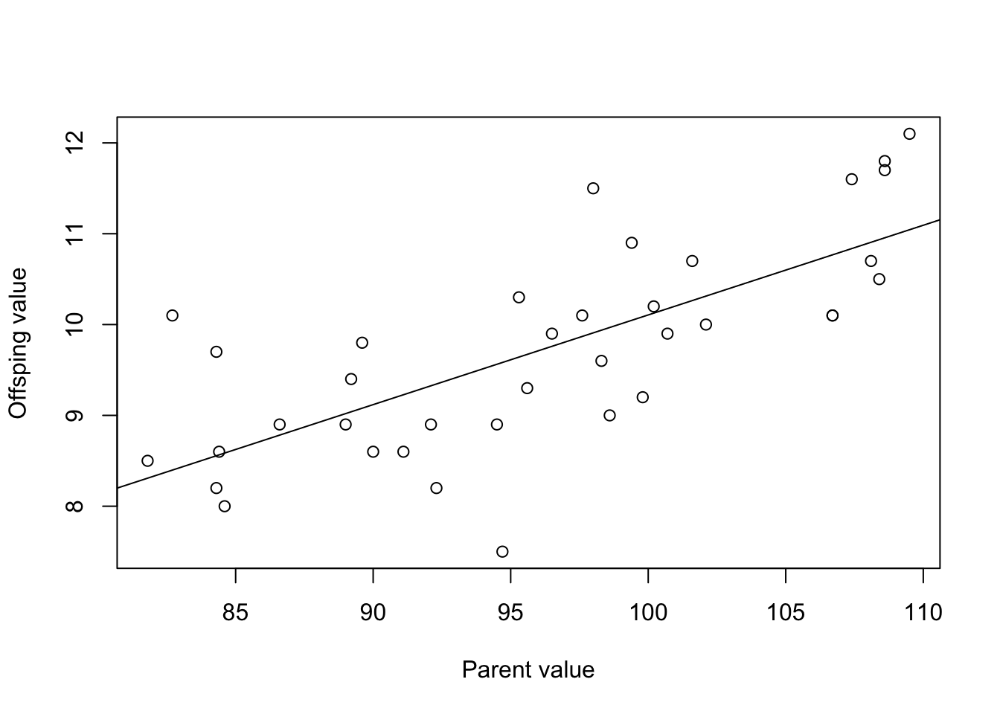

25 Solutions and “take-home” messages
In this section you will find the solutions and/or main take home messages of the practical exercises used in this course.
25.1 How to use this section
Use these solutions to check your reasoning after you attempt the tasks. If your answer differs, focus on the logic rather than the final number.
25.2 Solutions: The blind watchmaker
- What happens if selection is turned OFF?
If there is no selection, then there is no adaptation. Selection is required to retain the changes and pass to the next generation. With no selection the result is purely random.
- Does the number of generations affect whether the target phrase is reached?
Yes, if the phrase is complex, it may take many generations to reach. Increasing the number of generations will improve the chance that the target is reached.
- Does the speed of reaching the target phrase depend on the length of the phrase?
Yes. Shorter target phrases are achieved quicker than longer ones.
- How does this simulation differ from real natural selection?
Two ways. Firstly, natural selection does not have a specific long-term goal (i.e. target). It is simply that the better survivors are more represented in the next generation. Secondly, in natural selection each intermediate step needs to be advantageous compared to the previous step, which is not necessarily the case here.
25.3 Solutions: Bug hunt camouflage
- What happens to the average colour of the bug population with time as you hunt?
The colour evolves to become more similar to the background colour because you (the hunter) find it harder to find these better-camouflaged individuals.
- What happens to your hunting efficiency?
Your hunting efficiency tends to decrease with time because the bugs are evolving to be harder to see. They are evolving camouflaged colours.
- Would you say that the bug population becomes worse or better adapted to their environment?
The population becomes better-adapted to their environment with time.
- Can you explain how this happens?
You (the hunter) kill the most obvious bugs first (i.e. those with contrasting colours to the background). These are the individuals that are not well-adapted to the environment. The survivors have offspring that are similar to them, while the ones you kill leave no offspring. So as time goes on, the population becomes dominated by individuals that are well-camouflaged.
- After simulating in one environment (e.g. poppy field) for a few minutes, pause then switch to another environment. Are the bugs now well- or poorly-adapted to their environment?
Changing the environment means that the individuals are now poorly-adapted to their environment. This is because the individuals now find themselves in an environment that they did not evolve in. Their evolved camouflage does not work so well in a new environment.
- Do the genotypes of individuals change (e.g. with individual age)?
No, individuals’ genotypes are fixed. The change in the population occurs because of selection of individuals to reproduce. Better-adapted individuals are more likely to reproduce.
- Increasing the “max-mutation-step” makes bug offspring less like their parents. How do you think this will influence the speed of adaptation of the bugs?
Increasing the amount of variation in offspring will tend to speed up adaptation. However, there are limits: too much variation can cause maladaptation of offspring. For example, if a parent is well-adapted (perfectly camouflaged), too much variation in offspring could lead to some offspring being poorly-camouflaged and therefore vulnerable to predation.
25.4 Solutions: Geometric growth
You can find the completed Excel file here.
Take home messages:
- The rate of exponential/geometric growth depends on the population growth rate.
- Lambda (\(\lambda\)) values \(<1\) lead to a exponential decrease, while values \(>1\) lead to exponential growth. A \(\lambda\) of 1 indicates no change.
- Exponential growth is unlimited. This is unrealistic because very soon competition (what Darwin called “The struggle for existence”) will soon take effect as the population runs out of space or resources. Nevertheless, the model is useful and realistic for some limited situations (e.g. early population growth for new invaders)
- Growth trajectories can be plotted on the natural scale or on a log scale. Exponential growth (or decline) plotted on a log scale is a straight line. This could be useful to infer biological processes (or the lack of them). For example, exponential growth in population size indicates that there are no forces currently limiting the population (e.g. predators/competition/management actions).
- The slope of the population growth on the natural log scale can tell you what \(\lambda\) is. The “opposite” of ln is exp, so you can ask Excel to `=EXP(slope).
25.5 Solutions: Estimating Population Growth Rate
You can find the completed Excel file here.
- What does the log-transformed plot of population size over time tell you about the population’s growth trend? Does the population grow exponentially?
- The log-transformed plot should show a straight line if the population is growing exponentially, because the natural logarithm of an exponentially growing population will linearise the exponential curve. The slope of this line represents the natural log of the population growth rate \(log(\lambda)\). If the line has a positive slope, it indicates the population is growing; if it’s flat, the population is stable; and if it’s negative, the population is shrinking.
- In this exercise, assuming \(\lambda > 1\), the population is indeed growing exponentially, which will be reflected by a positively sloped line in the log-transformed plot.
- What is the estimated population growth rate (\(\lambda\)) based on your regression analysis?
- From the linear regression performed on the log-transformed data, the slope of the line corresponds to \(log(\lambda)\). To find \(\lambda\), exponentiate the slope: \(\lambda = e^{\text{slope}}\).
- For example, if the slope of the regression line is 0.086, then \(\lambda = e^{0.086} \approx 1.09\). This means the population grows by approximately 9% per year, matching the initial assumption of \(\lambda = 1.09\).
- What assumptions does this model make? Discuss any potential real-world factors that might affect the accuracy of your estimate for \(\lambda\).
The model assumes a constant growth rate over time. It does not account for environmental changes, resource limitations, or carrying capacity (which would lead to logistic rather than exponential growth).
The model also assumes no immigration, emigration, or catastrophic events that might disrupt the population trend.
Environmental variability: In reality, populations experience fluctuations due to weather, food availability, disease, and other stochastic factors, which can cause growth rates to change over time.
Density dependence: As populations grow larger, they may face resource limitations or increased competition, leading to a slowdown in growth, which would not be captured by a simple geometric model.
Measurement errors: In practice, the measurement of population sizes may not be precise, as discussed earlier with the introduction of noise. These errors can lead to inaccuracies in estimating \(\lambda\).
25.6 Solutions: Stochastic population growth
You can find the completed Excel file here.
Take home messages:
- Population growth rates are unlikely to be constant through time.
- Environmental stochasticity will cause changes through time in vital rates (birth/death) which will influence \(\lambda\) (and \(r_m\)).
- We can model environmental stochasticity using a distribution of population growth rates instead of a single deterministic value.
- We then can randomly draw growth rate values from this distribution for each time-step in a population projection.
- The “spread” or uncertainty in the population size at a future time point depends on (i) the spread (variance) of the distribution and (ii) the amount of time elapsed.
- We can repeatedly simulate a population projection (e.g. in R, or more laboriously in Excel) to get a feel for the likely fate of a population. E.g. “what percent of the projections show extinction within 50 years?”.
- We can use this relatively simple and “unrealistic” model to nevertheless get an intuition about general trends in population dynamics and extinction risk.
- Extinction probability increases as (i) initial population size decreases; (ii) variance increases; (iii) growth rates decrease; (iv) the time frame increases.
25.7 Solutions: Basic logistic population growth
You were asked to use the Excel sheet to answer some questions about logistic growth by examining the graphs.
First – take a look at Graph 1.
- What is the maximum population size?
- How does this compare to carrying capacity (K)?
- What do you predict to happen if you increase K to 300?
- Try doing that. Were you correct?
You should notice that when the population growth rate (\(r_m\)) is around 1 or lower, the maximum population size is the same as the carrying capacity (\(K\)). As you change \(K\), this maximum population size will change accordingly.
If \(r_m\) is markedly greater than 1, then the population size can exceed the carrying capacity. This is because the population grows so fast that it “overshoots” carrying capacity and then fluctuates around K.
- At what time do you reach the maximum population size?
- If you halved growth rate (r_m) to 0.4, what do you think will happen to this time?
- Try doing that. Were you correct?
You should notice that the time taken to reach the maximum population size is related to the growth rate (\(r_m\)). As you increase \(r_m\), the time taken to hit the maximum population size decreases. If you halve the growth rate, the time taken to reach maximum population size is doubled.
- What do you think will happen if you increase growth rate to 1.8?
- Try that… were you correct?
- What do you notice about the population size through time?
- How does the maximum population size compare with the carrying capacity?
- How would you describe the dynamics of this population?
You should notice that the population overshoots carrying capacity (\(K\)), then oscillates around \(K\) with damped oscillations that gradually move towards \(K\). Therefore if a population has even a moderate population growth rate, and if it has density-dependence, then it can fluctuate in numbers without any extrinsic factor (like weather) acting.
- What happens if you increase the growth rate even more, to 2 or 2.1?
- And even more to 2.8, 2.9 or 3?
- How would you describe these dynamics?
- Is there a limit to how high \(r_m\) can be? (hint: populations go extinct if N < 0).
You should notice that as you increase \(r_m\) the nature of the oscillations changes. In fact, this is predictable: If \(r_m < 1.0\), then population will approach \(K\) smoothly.
If \(1.0 < r_m < 2.0\), then oscillations of decreasing amplitude around K.
If \(2.0< r_m < 2.57\), then stable, cyclic oscillations around K . They can be 1 or 2+ point stable limit cycles.
If \(r_m > 2.57\), then population will fluctuate chaotically.
If \(r_m\) is too high, the population will fluctuate and crash to extinction.
Compare the population trajectory in Graph 1 for populations with \(r_m\)= 2.8 and 2.81. Then compare the trajectories where you fix \(r_m\) at 2.8 but vary initial population size by a small amount (e.g. 1). Imagine you were a population manager – would these populations be easy or hard to predict? What kinds of species have high population growth rates like these?
When \(r_m\) is high (\(>2.57\)) the population dynamics become extremely hard (impossible) to predict because they are chaotic. This means that even a very small change in \(r_m\) (which could simply be measurement error) will mean that predicted population size next year is suddenly very different. This would cause big problems to a population manager.
Many pest species and diseases have very high population growth rates. For example, locusts, or measles. This is one reason why it is hard to predict when the next pest/disease outbreak will happen
Now let’s turn to Graph 2
In graph 2, notice that the per capita growth rate always declines linearly with population size (\(N\)). Where does it cross the x-axis line? Modify the carrying capacity (\(K\)) – what do you notice?
The line describing per capita growth rate crosses the x-axis (population size) at \(K\). i.e. if \(K = 100\), the line crosses at 100. If you change \(K\), the intercept on the axis also changes accordingly. The line intercepts the x-axis at this point no matter what the population growth rate is. It intercepts the y-axis at \(r_m\).
How would the same plots look for regular exponential growth?
The equivalent plot (for Graph 2) for exponential growth would be a horizontal line - because population growth rate does NOT depend on population size.
25.8 Solutions: Deeper into logistic growth
25.8.1 Relationship between Logistic and Exponential growth equations
The logistic growth equation simplifies to become the exponential growth equation if you set \(K\) to be infinite (\(\infty\)). The simplification goes like this:
- \(\frac{d N}{d t}=r N\left(1-\frac{N}{K}\right)\)
- \(\frac{d N}{d t}=r N\left(1-\frac{N}{\infty}\right)\)
- \(\frac{d N}{d t}=r N\left(1-0\right)\)
- \(\frac{d N}{d t}=r N \times 1\)
- \(\frac{d N}{d t}=r N\)
This simplification also works with the discrete version of the equation, \(N_{t+1}=N_{t}+r_{d} N_{t}\left(1-\frac{N_{t}}{K}\right)\).
25.8.2 Type of dynamics depends on \(r_m\).
As you increase \(r_m\), the dynamics of the population changes. At low \(r_m\) population size (\(N\)) simply converges on the carrying capacity, \(K\). As \(r_m\) you will see damped oscillations whereby \(N\) overshoots \(K\) and then oscillates and converges to \(K\). Then you will see cycles where the population size oscillates around \(K\). The cycles can be simple two-point cycles (where \(N\) bounces between two points), or more complex with \(N\) bouncing between four-points (or more). In fact, the critical values of \(r_m\) that define the type of dynamics are fixed: if we know \(r_m\) we can predict the type of dynamics.
The behaviour of the population dynamics depends only on \(r_m\), not on \(K\) or starting population size (\(N_0\)) (as long as \(N_0 > K\)).
25.8.3 You can obtain parameters from graphs
You should notice that having some information about what the parameters are will allow you to sketch the dynamics. Conversely, if you have a graph showing aspects of the population dynamics, you could figure out what the parameters of the logistic equation are.
For Exponential growth, population size is unlimited and will grow exponentially if \(r\) is \(>0\) (or \(\lambda > 1\)). Logistic growth will show some kind of limit (damped oscillation, or whatever), as the population size is attracted to \(K\) in some way.
In logistic growth, the per capita growth rate declines as population size increases, and reaches \(0\) when \(N = K\). In exponential growth, the per capita growth rate remains constant and unaffected by \(N\). Therefore the graphs of growth rate vs. N will be very different: Logistic = a negative slope, exponential = a horizontal line.
25.8.4 Time lag
Time lagged density dependence results in oscillations. Therefore if we see oscillations in dynamics it could be due to a particular \(r_m\) value or lagged density dependence.
25.8.5 Chaotic dynamics
Chaotic dynamics are deterministic in the sense that if you have the same initial conditions you will get the same results (dynamics). However, small changes in any parameters (\(N_0\), \(K\), or \(r_m\)) will lead to very different dynamics - so in that sense, because of measurement error, the population dynamics would be very hard to predict in practice.
25.9 Solutions: Life tables and survivorship types
The take home messages for this exercise are that life tables are a rich source of information on the life history of a population or species. From a simple accounting of ages at death and fertility we can obtain information about the “shape” of the survivorship trajectory: do most deaths happen early or late? Is mortality risk constant with age? We can also calculate measures including generation time, \(R_0\) and population growth rate. You should know what these measures mean.
You should understand the relationship between mortality risk and survivorship curve. In other words, you should be able to describe, or do a rough sketch of mortality risk with age, if you have a survivorship curve (or vice versa).
The completed Excel spreadsheet is here.
25.10 Solutions: Matrix population modelling
The main take home messages for this class are that you should: (1) understand, and be able to draw or interpret life cycle diagram; (2) be able to (roughly) parameterise a model shown in the life cycle diagram; (3) be able to write out a matrix model (the square of numbers) for a given life cycle diagram (and vice versa). (4) understand how population projection works, and to therefore interpret a figure or description showing a population projection. (5) understand what an elasticity matrix tells us (it tells us the relative importance of the transitions for population growth) (6) understand the concept of doing an LTRE to investigate management options.
25.11 Solutions: How many eggs should a bird lay?
You can find a completed Excel spreadsheet here.
The take-home message is that the trade-off between number of eggs and juvenile survival leads to an optimum number of eggs required to maximise reproductive success (i.e. number of surviving chicks).
You can move this optimum if the trade-off is changed. For example, if you increase survival of the chicks from larger clutches, then the optimum number of eggs will increase.
This fact reminds us that the environment (e.g. predation risk and resource abundance) will be an important factor in determining the evolution of life history parameters (like average number of babies).
25.12 Solutions: Trade-offs and the force of selection
Simulate this by adding 1 to fertility (mx) in year 1 (the benefit) but reducing survival to 0 (all die) at age 25 (the cost). What is the fitness of this strategy?
Fitness (R0) would be 50.76 (compared to 49.81).
By setting survival to 0 at other ages, determine how many years of life could be lost before this cost is no longer worth bearing. Is this surprising?
You could “kill” the species at 18, losing 8 years of life, before the new strategy of a small increase in fertility at the expense of years of life at the end of life becomes unfavourable. In other words, a cost of losing 8 yrs of life is worth bearing if the benefit is an extra baby in year 1.
Now reset everything (mx =10; survival = 0.8). Recall what fitness was when you added 1 to mx at age 1 (R0=50.811). If, instead of adding to mx at age 1 you were to increase mx at age 25, how much would you need to increase it to reach this figure?
At age 25 you would need to increase Fertility from 10 to 222 to reach the same level of improvement in fitness as increasing Fertility from 10 to 11 at age 1.
What about at age 20? 10 to 80 Age 15? 10 to 33 Age 10? 10 to 18 Age 5? 10 to 13
What do you notice?
You should notice that changes made at younger ages have a bigger effect than those at older ages. I have plotted this to the right. The plot shows the amount of increase in fertility that would be required to raise fitness (R0) from 49.81 to >50.81 at ages 1 through to 25 (i.e. the figures you estimated above). You can see that you only need to change fertility a little bit at young ages, but you would need to make BIG changes at older ages.
Reset everything again (mx =10; survival = 0.8). Set mx from age 15 onwards to be 0. Now alter survival rate after this point (at ages 15-25). What happens to fitness?
You should notice that any changes you make to survival AFTER reproduction has been completed will have no effect on fitness. In other words evolution “doesn’t care about you” after you have finished with reproduction.
25.13 Solutions: Hardy-Weinberg equilibrium
Answers to the Hardy-Weinberg questions.
Remember the basic formulas: \(p^2 + 2pq + q^2 = 1\) and \(p + q = 1\)
\(p\) = frequency of the dominant allele in the population
\(q\) = frequency of the recessive allele in the population
\(p^2\) = percentage of homozygous dominant individuals
\(q^2\) = percentage of homozygous recessive individuals
\(2pq\) = percentage of heterozygous individuals
25.13.1 Problem 1
The frequency of the aa genotype: 36%, as given in the problem itself.
The frequency of the a allele: The frequency of aa is 36%, which means that \(q^2 = 0.36\), by definition. If \(q^2 = 0.36\), then \(q = 0.6\). Since \(q\) equals the frequency of the “a” allele, the frequency is 60%.
The frequency of the A allele: Since \(q = 0.6\), and \(p + q = 1\), then \(p = 0.4\); the frequency of A is equal to \(p\) (see the basic H-W equations), so the answer is 40%.
The frequencies of the genotypes AA and Aa: The frequency of AA is equal to \(p^2\), and the frequency of Aa is equal to \(2pq\). So, using the information above, the frequency of AA is 16% (i.e. \(p^2 = 0.4 x 0.4 = 0.16\) and Aa is 48% (\(2pq = 2 \times 0.4 \times 0.6 = 0.48\)).
The frequencies of the two possible phenotypes if A is completely dominant over a: Because A is totally dominate over a, the dominant phenotype will show if either the homozygous AA or heterozygous Aa genotypes occur. The recessive phenotype is controlled by the homozygous aa genotype. Therefore, the frequency of the dominant phenotype equals the sum of the frequencies of AA and Aa, and the recessive phenotype is simply the frequency of aa. Therefore, the dominant frequency is 64% and, in the first part of this question above, you have already shown that the recessive frequency is 36%.
25.13.2 Problem 2
9% = 0.09 = ss = \(q^2\). To find \(q\), simply take the square root of 0.09 to get 0.3. Since \(p = 1 - 0.3\), then \(p\) must equal 0.7. \(2pq = 2 \times 0.7 \times 0.3 = 0.42\), so 42% of the population are heterozygotes (carriers).
25.13.3 Problem 3
The frequency of the recessive allele. Since we believe that the homozygous recessive for this gene (\(q^2\)) represents 4% (i.e. = 0.04), the square root (\(q\)) is therefore 0.2 (20%).
The frequency of the dominant allele. Since \(q = 0.2\), and \(p + q = 1\), then \(p = 0.8\) (80%).
The frequency of heterozygous individuals. The frequency of heterozygous individuals is equal to \(2pq\). In this case, \(2pq = 0.32\), which means that the frequency of individuals heterozygous for this gene is equal to 32% (i.e. \(2 \times 0.8 \times 0.2) = 0.32\).
25.13.4 Problem 4
The first thing you’ll need to do is obtain \(p\) and \(q\). So, since white is recessive (i.e. bb), and 40% of the butterflies are white, then bb = \(q^2\) = 0.4. To determine \(q\), which is the frequency of the recessive allele in the population, take the square root of \(q^2\) which is 0.632. So, \(q = 0.63\). Since \(p + q = 1\), then \(p\) must be \(1 - 0.63 = 0.37\).
Now then, to answer our questions. First, what is the percentage of butterflies in the population that are heterozygous? Well, that would be \(2pq\) so the answer is \(2 \times 0.37\times 0.63 = 0.47\). Second, what is the frequency of homozygous dominant individuals? That would be \(p^2\) or \(0.37^2 = 0.14\).
25.14 Solutions: Gene pool model
25.14.1 Discussion questions
- How does population size affect the variation through time in allele frequencies? Why do you see these patterns?
- Population size plays a crucial role in determining the variation in allele frequencies over time. In small populations, random genetic drift has a more pronounced effect, leading to larger fluctuations in allele frequencies. This is because in smaller populations, the random sampling of alleles during reproduction can result in significant changes in allele frequencies. In contrast, in larger populations, these random fluctuations are dampened due to the “averaging” effect of having more individuals. Hence, allele frequencies in larger populations tend to be more stable over time.
- How does the probability of fixation change with population size?
- The probability of fixation of a new mutation is equal to its initial frequency. For a new mutation appearing in a population, its initial frequency is 1/2N, where N is the population size. Thus, in smaller populations, a new allele has a slightly higher chance of becoming fixed compared to in larger populations. However, it’s essential to note that while the probability of fixation is higher in smaller populations, the overall genetic drift effect is also more pronounced, which means alleles might be lost or fixed more rapidly.
- When the population size is large (say 1000), is it still possible for alleles to become fixed?
- Yes, it is still possible for alleles to become fixed in a large population, but it typically takes a longer time compared to smaller populations. The larger the population, the more generations it usually takes for an allele to become fixed purely by chance (genetic drift). However, other factors like selection can expedite this process.
- Are rare alleles (defined with allele frequency) more or less likely to be lost than common ones? What implications does this have for new alleles (mutations)?
- Rare alleles are more likely to be lost from a population than common ones due to genetic drift. This is especially true in small populations where random events can have a more pronounced impact on allele frequencies. For new alleles (which start as rare alleles when they first appear), this means they have a higher likelihood of being lost from the population before they can increase in frequency. However, if a new mutation provides a selective advantage, it can increase in frequency and become common, reducing its chance of being lost.
25.14.2 Bottlenecks
Of course, let’s dive into the answers for the discussion questions related to genetic bottlenecks:
- How does a genetic bottleneck influence the genetic composition of the population?
- Answer: A genetic bottleneck results in a sudden and drastic reduction in the size of a population. This means that only a subset of the genetic variation present before the bottleneck remains in the population that survives. As a consequence, the genetic composition of the population post-bottleneck is often less diverse. Certain alleles may be lost entirely, while others might become more prevalent or even fixed. This change in allele frequencies due to the bottleneck can lead to reduced genetic diversity and can make the population more vulnerable to diseases, environmental changes, and other threats because of the lack of genetic variability.
- How might a genetic bottleneck impact the probability of genetic fixation?
- Answer: A genetic bottleneck can significantly increase the probability of genetic fixation, especially if the bottleneck is severe and the population size is drastically reduced. When the population size is small, random genetic drift has a more pronounced effect, leading to rapid changes in allele frequencies. In such scenarios, certain alleles might quickly become fixed in the population purely by chance, even if they don’t confer any selective advantage. Conversely, beneficial alleles could also be lost entirely, a phenomenon known as “drift override.”
- Does the severity of the bottleneck (i.e. length and population size) matter?
- Answer: Yes, the severity of the bottleneck, both in terms of its duration (length) and the remaining population size, plays a crucial role in determining its genetic consequences. A more extended bottleneck or one that drastically reduces the population size can lead to a more significant loss of genetic diversity. The longer a population remains small, the more time there is for genetic drift to affect allele frequencies, leading to the potential loss or fixation of alleles. Similarly, the smaller the surviving population, the greater the influence of random sampling effects on genetic composition. Thus, both the duration and the intensity of the bottleneck are critical factors in determining its genetic impact.
25.14.3 Broader questions
- What are the limitations of this simulation? What other real-world factors and complexities are not considered in this simplified model?
- Answer: The simulation is a simplified representation of real-world gene pool dynamics. Some of the limitations include:
- Selection Pressure: The model does not account for natural selection, where certain alleles may confer a survival or reproductive advantage.
- Migration: In the real world, populations are not always isolated. Gene flow between populations due to migration can significantly influence allele frequencies.
- Mutations: Over time, new alleles can arise in a population due to mutations, introducing additional genetic variability.
- Non-Random Mating: The model assumes random mating, but in nature, there might be preferences or restrictions that influence mating choices.
- Environmental Factors: In real-world scenarios, changing environments can influence which alleles are beneficial or detrimental.
- Answer: The simulation is a simplified representation of real-world gene pool dynamics. Some of the limitations include:
- Why is genetic diversity important to a population, for example in a conservation context?
- Answer: Genetic diversity is crucial for the adaptability and survival of a population. In a conservation context:
- Resilience to Diseases: A genetically diverse population is less likely to be wiped out by a single disease, as some individuals might have resistance.
- Adaptation to Changing Environments: Diverse genes mean a higher chance that some individuals in the population have traits beneficial for surviving in changing conditions.
- Reduced Inbreeding: High genetic diversity reduces the chances of inbreeding, which can lead to the expression of deleterious recessive alleles and overall reduced fitness of the population.
- Long-Term Survival: Over many generations, genetic diversity ensures that populations can evolve and adapt to long-term changes in their environment.
- Answer: Genetic diversity is crucial for the adaptability and survival of a population. In a conservation context:
- Can you think of real-life scenarios where understanding gene pool dynamics would be valuable, such as in conservation biology or medical genetics?
- Answer: Absolutely!
- Conservation Biology: When trying to revive endangered species, understanding gene pool dynamics can help conservationists make informed decisions about breeding programs to maintain or increase genetic diversity.
- Medical Genetics: Understanding the gene pool is crucial when studying the prevalence of genetic disorders within specific populations or tracing the origin and spread of certain genetic traits.
- Agriculture: Crop breeders often need to understand gene pool dynamics to develop strains that are resistant to diseases, pests, or changing climate conditions.
- Pharmacogenomics: In medicine, understanding how different populations metabolise or react to drugs based on their genetic makeup can be invaluable.
- Answer: Absolutely!
- Can you think of a way to simulate the genetics of a population that is steadily shrinking through time?
- Answer: To simulate a steadily shrinking population, one could adjust the model to reduce the population size in each subsequent generation. This could be achieved by setting a percentage reduction or a fixed number by which the population decreases in each time step. During each iteration of the simulation, the model would then sample from an increasingly smaller gene pool, reflecting the reduction in population size. Over time, this would likely lead to more pronounced effects of genetic drift, with alleles potentially being lost or becoming fixed at a faster rate.
25.15 Solutions: Neutral or adaptive evolution in humans
The take home message here is that whether traits are adaptive or neutral depends on the environment.
Consider genes that confer antibiotic resistance on bacteria. In the absence of antibiotics, these genes are not important and are not selected for. They still evolve (if they vary among individuals and are inherited), but this evolution is neutral with no selection. On the other hand, when antibiotics are introduced to the system, those same genes are strongly selected for and evolution of the genes for antibiotic resistance is now strongly adaptive. Context matters.
The same is the case for traits in humans. Assuming that the traits vary among individuals and are inherited, their neutrality or adaptiveness depends on their effect on fitness. If the traits have strong effects on fitness then they will be under strong selection but if they have weak or no effects on fitness they will evolve via neutral evolution.
Example traits that evolve via neutral evolution include fingerprint structure and iris structure. The detailed structures are not important to fitness, but are still genetically determined, and inherited.
Traits like muscle strength, running speed may have been important for fitness when they helped our ancestors obtain food. In those environments, they would have been under selection and therefore evolve via adaptive evolution. In more modern times, these selection pressures are weaker.
25.16 Solutions: Heritability
You can read in data like this:
Though you can also use the “Wizard” in RStudio.
Plot the data as follows.
##
## Call:
## lm(formula = Offspring_value ~ Parent_value, data = pop_1)
##
## Residuals:
## Min 1Q Median 3Q Max
## -16.9417 -3.8648 -0.2452 4.5332 9.3121
##
## Coefficients:
## Estimate Std. Error t value Pr(>|t|)
## (Intercept) 11.2533 10.9533 1.027 0.312
## Parent_value 0.5678 0.1114 5.097 1.63e-05 ***
## ---
## Signif. codes: 0 '***' 0.001 '**' 0.01 '*' 0.05 '.' 0.1 ' ' 1
##
## Residual standard error: 5.506 on 31 degrees of freedom
## Multiple R-squared: 0.4559, Adjusted R-squared: 0.4384
## F-statistic: 25.98 on 1 and 31 DF, p-value: 1.628e-05The heritability is the slope of the relationship, so is 0.568 in this case. This is fairly high heritability.
What does the heritability tell us about the amount of variation explained by genetic factors?
A heritability of 0.568 for wing length indicates that 56.8% of the observed variation in this trait within the population can be attributed to genetic factors. In other words, a significant portion of the variation in wing length is genetically determined.
What other factors might explain the remaining variation?
There are many other factors at play. The remaining 30% of variation could be due to environmental factors such as diet, climate, or social interactions. It might also include measurement error or other stochastic events.
How would the heritability estimate change if you used a different trait (e.g., beak length instead of wing length)?
Heritability is trait-specific. The heritability estimate for beak length could be higher, lower, or the same as that for wing length, depending on the genetic and environmental variances contributing to this particular trait.
What does the heritability tell us about how fast a trait might change due to selection?
A higher heritability (like 0.568) suggests that the trait would respond more quickly to selection because a large proportion of the variation is genetic. Traits with lower heritability would be slower to respond to selection as they have a larger environmental component.
The graph for the second population looks like this:
Plot the data as follows.

##
## Call:
## lm(formula = Offspring_value ~ Parent_value, data = pop_2)
##
## Residuals:
## Min 1Q Median 3Q Max
## -2.0829 -0.5187 -0.1199 0.6578 1.7023
##
## Coefficients:
## Estimate Std. Error t value Pr(>|t|)
## (Intercept) 0.22970 1.53505 0.150 0.882
## Parent_value 0.09877 0.01590 6.212 4.07e-07 ***
## ---
## Signif. codes: 0 '***' 0.001 '**' 0.01 '*' 0.05 '.' 0.1 ' ' 1
##
## Residual standard error: 0.8022 on 35 degrees of freedom
## Multiple R-squared: 0.5244, Adjusted R-squared: 0.5108
## F-statistic: 38.59 on 1 and 35 DF, p-value: 4.066e-07For this population, the heritability (slope of the relationship) is 0.099 in this case. This is fairly low heritability.
What does the heritability tell us this time?
A heritability of 0.099 in the second population indicates that only 9.9% of the variation in wing length is attributable to genetic factors. This is substantially lower compared to the first population, suggesting that environmental factors have a greater influence on the trait in this particular population.
Can you identify any environmental factors that might explain the difference?
Various environmental factors could explain the lower heritability in the second population. These might include (but are not limited to): Nutrition: Inadequate nutrition can lead to stunted growth or development, which could introduce a significant environmental variable into wing length. Poor nutrition might limit the expression of genes related to wing growth, thereby reducing the observed heritability as the environment (nutrition) plays a more substantial role.
Predation Pressure: In a population under higher predation pressure, there could be strong selection for specific wing lengths that allow for more agile flight. However, if this selection pressure varies frequently (e.g., due to fluctuations in predator populations), it could introduce more environmental variance in wing length. The heritability would then appear lower because of this inconsistency in selection pressure. Climate: Variable climates, especially those that are more extreme, could influence the development of wing length. Cold climates may lead to smaller wings due to the need for a more rounded body shape to conserve heat (Bergmann’s rule). In contrast, hot and arid climates may lead to longer wings for more efficient soaring. If the second population is exposed to a more variable or extreme climate, this could contribute to lower heritability. Social Structure: Different mating systems could impact heritability. For instance, if the second population has a polygamous system where a few males sire most of the offspring, genetic variance could be skewed and less representative, thus affecting heritability calculations. e.
Can you think of any real-world applications where understanding heritability would be important?
- Agriculture: Plant and animal breeding programs often rely on heritability estimates to improve desirable traits like yield, disease resistance, or growth rate.
- Medicine: In personalized medicine, understanding the heritability of certain conditions or responses to treatments can lead to more effective, tailored interventions.
- Conservation Biology: For endangered species, understanding the heritability of traits related to survival and reproduction can guide conservation efforts.
- Public Health: Understanding the heritability of traits like BMI or cholesterol levels can inform public health policies and preventative measures.
- Psychology and Education: Knowing the heritability of cognitive traits or educational attainment can help in developing targeted educational programs.
Violation of assumptions
- Additive Genetic Effects: Epistasis or gene-gene interactions could violate this assumption, affecting the predicted heritability.
- No Shared Environment: If parent and offspring share significant environmental influences, like diet or habitat, this assumption is compromised.
- Linearity: Non-linear relationships between parent and offspring traits would violate this assumption.
- Measurement Accuracy: Instrumental errors or observer bias could invalidate this assumption.
- Random Mating: If there is assortative mating based on the trait of interest, this assumption is violated.
- No Selection Bias: If the sample is not representative of the population, perhaps due to selective pressures, this assumption is compromised.
- Statistical Independence: If data from sibling or repeated measures are included, this assumption is broken.
- No Genetic Drift or Migration: A sudden influx of new individuals or loss of existing ones due to various factors can violate this assumption.
25.17 Solutions: Lotka-Volterra competition
You can find a completed Excel spreadsheet here.
The answers to the questions are here.
To add to this document, you can see the conditions for coexistence in the Neal textbook (p. 278). Note that in this textbook, \(\alpha_{12}\) is written as \(\alpha\) and \(\alpha_{21}\) is written as \(\beta\)
Let’s break down the implications of the conditions \(\alpha_{12} < \frac{K_1}{K_2}\) and \(\alpha_{21} < \frac{K_2}{K_1}\) for stable coexistence in a more intuitive way:
Carrying Capacities \(K_1\) and \(K_2\): Think of the carrying capacity as the maximum number of guests each species can have at their own “party” (their environment) before it becomes too crowded.
Competition Coefficients (\(\alpha_{12}\) and \(\alpha_{21}\)): The competition coefficients are like how much each uninvited guest from the other species “eats” if they crash the party. If they eat too much (high \(\alpha\)), they could ruin the party by leaving not enough food for the intended guests.
Condition \(\alpha_{12} < \frac{K_1}{K_2}\): This means that the uninvited guests from species 2 don’t eat too much at species 1’s party. Even if they eat some food, there’s still enough for all of species 1’s intended guests — so species 1 can still have a successful party.
Condition \(\alpha_{21} < \frac{K_2}{K_1}\): Similarly, this means that the uninvited guests from species 1 are polite enough not to eat too much at species 2’s party, leaving enough for species 2’s intended guests.
When both conditions are met, it’s like both species can have their parties without ruining each other’s. They both manage to have enough resources (food) to sustain a good number of guests (population) without the other species taking so much that it causes a problem.
In ecological terms, these conditions mean that while there is some competition for resources between the two species, it’s not so severe that one species would prevent the other from surviving. They can both maintain healthy populations without outcompeting each other to the point of extinction. Each species manages to “live and let live,” with neither being too greedy for the shared environment to handle.
25.18 Solutions: Lotka-Volterra predator-prey dynamics
You can find a completed Excel spreadsheet here.
The answers to the questions are here.
25.19 Solutions: The legend of Ambalappuzha
You can find the completed Excel file here.
Take home messages:
- Exponential/geometric growth is extremely powerful and can very quickly lead to very large numbers.
25.20 Solutions: From population biology to fitness
The matrix model with a trade off (increased juvenile survival, but reduced old adult survival) looks like this.
A3 <- matrix(c(0.00, 5.00, 1.00,
0.11, 0.80, 0.00,
0.00, 0.10, 0.20),
byrow = TRUE, nrow = 3)
eigs(A3)$lambdaWe can compare the \(\lambda\) value from this model to the original one to ask ourselves whether the large cost is worth paying for the small benefit. It turns out that it is. You can then ask how MUCH cost would be worth bearing, by repeating the exercise and slowly reducing old-adult survival until you reach the original \(\lambda\) value.
You should find that the cost can be huge, and still worth bearing. In fact, you could reduce old adult survival to 0 and it is still worth doing! You can even reduce old-age adult reproduction without much effect on fitness.
HOWEVER, changes to prime age adults are much more important. You can only reduce survival to about 0.76 (from 0.8) before the cost is not worth bearing (population growth rate falls below that of the first baseline model).
Thus, old-age costs are “worth it” while prime age costs are much more important. This finding is central to the evolution of senescence and life span, which we will cover later in the course.
Cobweb diagrams and bifurcation plots offer another way of visualising dynamics of populations (see the article about Chaos, by Mathiopoulos).